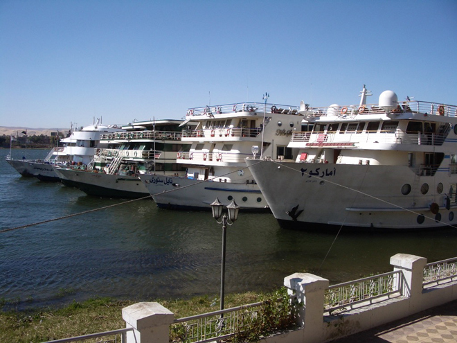
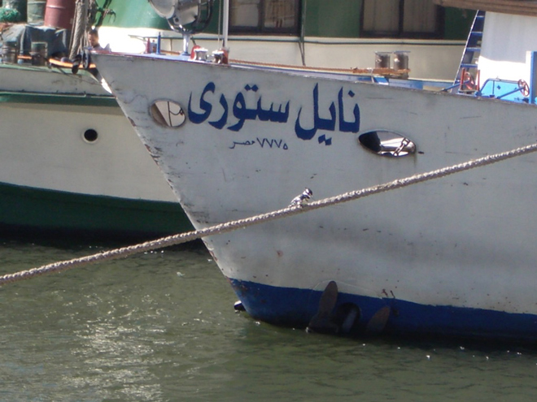
Security was tight on our first sailing north (to Dendera). Due to militant Islamic fundamentalist attacks on tourists - including the massacre of 58 foreigners and 4 Egyptians at Queen Hatshepsut's Temple in 1997, there are now regular checkpoints along the Nile highway and our ship had a machine gunner stationed at the rear of the boat while we went on this northern excursion. They weren't taking any risks and I was forbidden from taking a photograph of the gunner or his weapon. The west bank of the Nile showed evidence of industry and commerce.
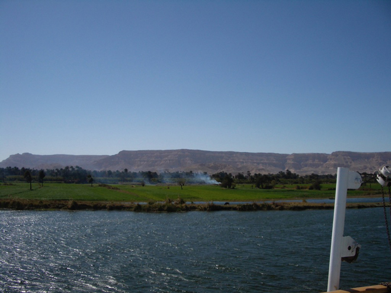
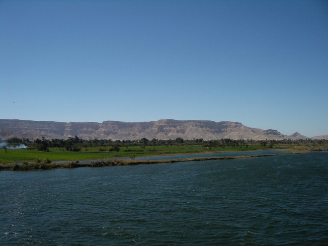
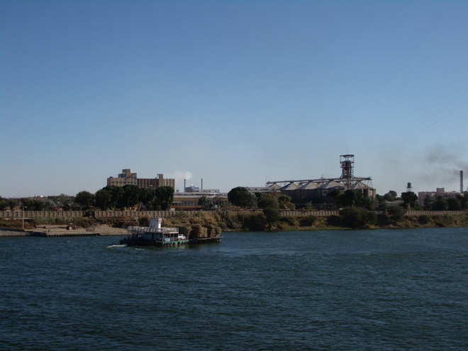
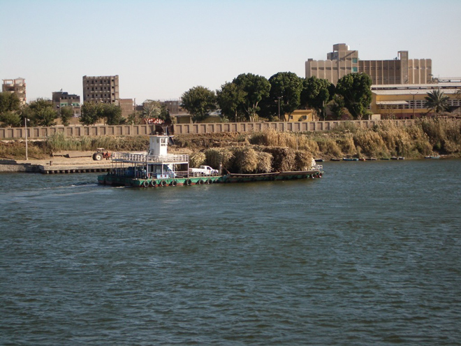
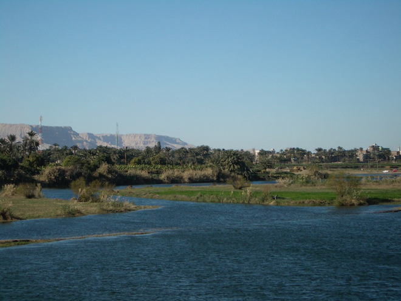
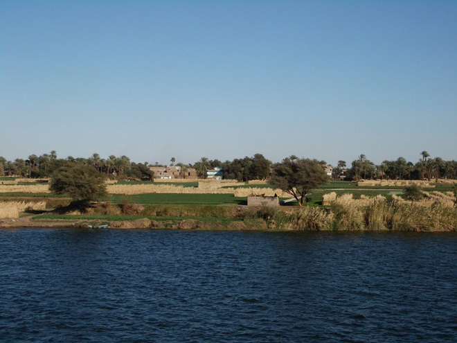
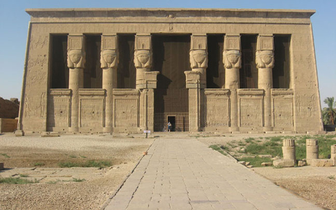
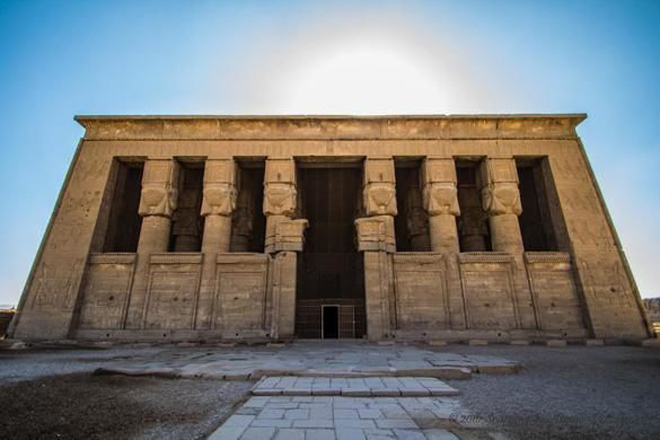
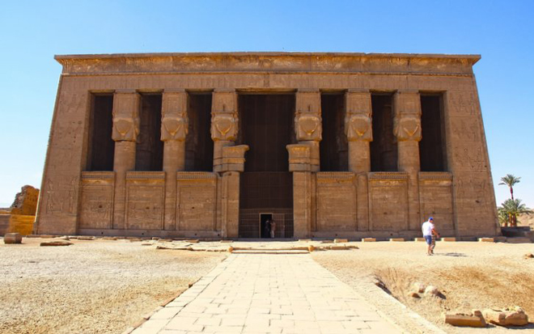
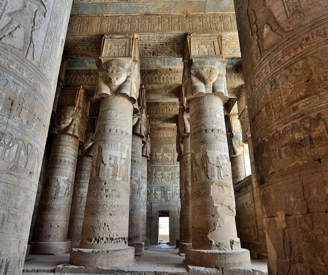
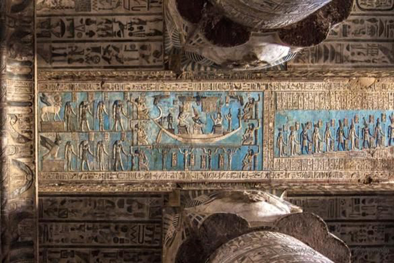
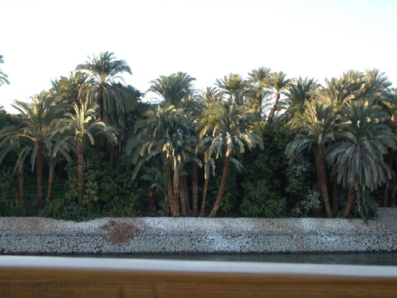